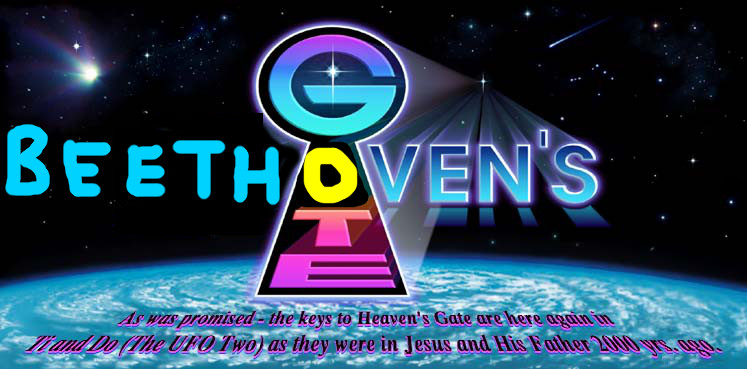

|
We are a group who believes that in order to transcend to the next "level", we must watch all of the Beethoven films in rapid succession. We believe that this will send a "signal" to the stars to summon
a UFO -- the spacecraft from the Level Above Human to take us home to "Their World" -- in the literal Beethovens. We are happily prepared to leave "this world".
If you study the material on this website you will hopefully understand our joy and what our purpose here on Earth has been. You may even find your "boarding pass" to leave with us during this brief "window." We are so very thankful that we have been recipients of this opportunity to prepare for membership in Their Kingdom, and to experience Their boundless Caring and Nurturing. |